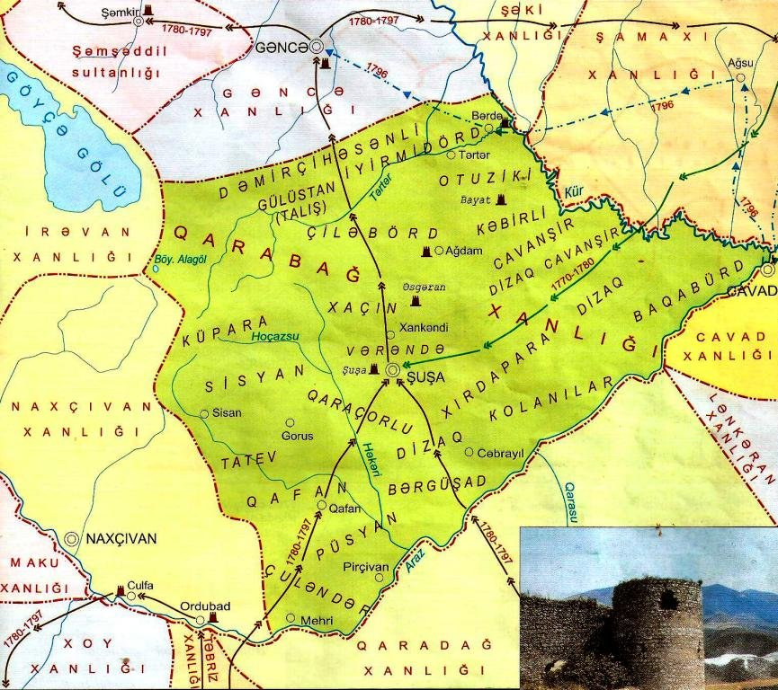

Qarabağ Xanlığı
Nadir şah Əfşar imperiyasının süqutundan sonra müstəqillik qazanmış Azərbaycan dövlətlərindən biri olan Qarabağ xanlığının banisi Azərbaycanın görkəmli dövlət xadimlərindən biri olan Pənahəli bəy Cavanşir idi. O, Qarabağın Sarıcalı kəndində anadan olmuşdur. Qarabağ xanlığının vəziri olmuş tarixçi Mirzə Camal yazır: "Mərhum Nadir şah Qarabağ, Gəncə, Tiflis və Şirvan vilayətlərini aldıqdan sonra, ellər və kəndlər arasında görüb tanıdığı hər bir şücaətli və işgüzar adamı yanına çağırıb, öz yaxın qulluqçuları sırasına alar və onu məvacib, ehtiram və mənsəb sahibi edərdi. O cümlədən ellər arasında Pənahəli bəy Sarıcalı Cavanşir adı ilə şöhrət tapmış, hər işdə fərqlənmiş, ad çıxarmış, müharibə və davada tay-tuşuna üstün gələn və xüsusilə mərhum Nadir Rum əhli qoşunları ilə etdiyi müharibələrdə (XVIII yüzilin 30-cu illərində Osmanlı imperiyasına qarşı müharibələr nəzərdə tutulur) şücaət göstərmiş Pənah xanı da öz yanına apardı". Lakin Muğan qurultayından sonra Nadir onun hakimiyyətini qəbul etmək istəməyən qarabağlılara divan tutmağa, bu diyarın türk-müsəlman əhalisini Əfqanıstan və Xorasana sürgün etməyə başlamışdı. Bu tədbirə etiraz etdiyinə görə Pənahəli bəyin qardaşı Fəzləli xan edam olunmuşdu. Bunu görən Pənahəli bəy şah Xorasanda olduğu zaman, fürsət tapıb bir neçə qohumu və yaxın adamı ilə 1737-1738-ci illərdə Qarabağ vilayətinə qaçdı. Şah onun qaçmasından xəbər tutan kimi onu yolda ələ keçirmək üçün ardınca çaparlar göndərdi. Lakin onu tutmaq mümkün olmadı. Nadir Azərbaycan sərdarına, Gəncə, Tiflis və Şirvan hakimlərinə qəti fərmanlar göndərdi ki, Pənah xanı harda tapsalar, tutub şahın hüzuruna göndərsinlər. Şahın əmri ilə Pənah xanın ailəsini və qohum-qardaşını çox incidib cərimə etdilərsə də, fayda vermədi. Beləliklə, hələ Nadirin sağlığında Pənahəli bəy ona tabe olmaqdan boyun qaçırıb Vətəni olan Qarabağı müstəqil surətdə idarə etməyə cəhd göstərmişdi. Nəticədə Nadir şahın ölümündən sonra Qarabağ torpaqlarında müstəqil Azərbaycan dövləti — Qarabağ xanlığı yarandı. Qarabağ xanlığı müstəqil dövlət elan edildikdən sonra başlıca vəzifə onun möhkəmlənməsinə nail olmaq idi. Pənah xanın bu sahədə ilk tədbirlərindən biri Qarabağın Nadir şah tərəfindən sürgün olunmuş türk-müsəlman əhalisini geri — doğma torpağa qaytarmaq oldu. Köçkünlərin geri qaytarılması və dədə-baba torpaqlarında yerləşdirilməsi Qarabağ xanlığını gücləndirdi. Sürgündən ilk qayıdanlar içərisində Qarabağın gələcək xanı, 15 yaşlı İbrahimxəlil də var idi. Qarabağ xanlığı yarandığı zaman burada Təbriz, Ərdəbil, Gəncə, Şamaxı, Bakı, Naxçıvan, Şəki, Dərbənd kimi şəhərlər yox idi. Halbuki belə siyasi-iqtisadi mərkəzlərin olması xanlıqların gələcək inkişafı üçün çox mühüm idi. Yeni müdafiə qurğuları və şəhərlərin salınması Pənah xanın hərbi-siyasi işlərlə yanaşı, dəyərli quruculuq uğuru sayılmalıdır. Bu sahədə ilk addımlardan biri 1748-ci ildə qədim Azərbaycan-türk tayfası olan bayatların adı ilə bağlı Bayat qalasının tikilməsi oldu. "Xan bütün ailəsini, qohumlarının və el böyüklərinin əhli-əyalını oraya topladı. Ətrafda olan camaat, hətta Pənah xanın tərəqqisini, onun rəftar və məhəbbətini eşidən Təbriz və Ərdəbil vilayətlərinin bir çox əhalisi və sənətkarları belə öz ailələrilə birlikdə gəlib Bayat qalasında yerləşdilər". Pənah xanın müstəqil dövlət quruculuğu sahəsindəki fəaliyyəti onun rəsmən tanınması ilə nəticələndi. Mirzə Camal yazır: "Müsəlman tarixi ilə 1161, xristian tarixi ilə 1745-ci ildə (1748-ci il olmalıdır) Adil şahın Pənah xana "xan" adı verilməsi və Qarabağ hakimi vəzifəsinə təyin edilməsi haqqında fərmanı, qiymətli xələt, qızıl yəhərli at və daş-qaşla bəzənmiş qılıncla birlikdə Sərdar Əmir Aslanın yaxın adamı vasitəsilə o zaman yaşadıqları Bayat qalasına gəlib çatdı". Adil şahın fərmanı, əslində gecikmiş bir sənəd idi. Həqiqi "hakimlik" şah fərmanından əvvəl, ondan asılı olmadan qazanılmışdı. Pənah xanın "Qarabağ hakimi" kimi tanınmasında Şəki xanlığının Qarabağ üzərinə uğursuz yürüşü mühüm rol oynadı. Şəki xanı Hacı Çələbi özünün 1748-ci ildəki uğursuz Bayat yürüşündən sonra bildirmişdi: "Pənah xan bu vaxtacan sikkəsiz gümüş idi. Biz gəldik ona sikkə vurduq və qayıtdıq" (və ya "Pənahəli özünü xan elan etmişdi, mən isə öz məğlubiyyətimlə onun xanlığını təsdiq etdim"). Hacı Çələbi xanın xalq içərisində zərb-məsələ çevrilmiş bu sözləri, əslində, Adil şahın fərmanından daha artıq gücə malik idi. Əhməd bəy Cavanşir yazır: "…Bu qalibiyyətdən (Bayat döyüşündən) sonra Pənah xanın igidliyi haqqında dillərə düşən dastan o zaman Qarabağda yaşayan bütün müsəlman tayfalarını müharibəsiz olaraq onun təbəəliyinə tabe etdirdi". Bayat döyüşü, eyni zamanda bu qalanın gələcək tarixi sınaqlara dözə bilməyəcəyini də üzə çıxardı. Ona görə də yeni qala salınması tələb olunurdu. Mirzə Adıgözəl bəy yazırdı: "Pənah xan Şahbulağı adı ilə məşhur olan Tərnəkütdə bir qala bina etdi. Daş və əhəngdən məscidlər, evlər, çarsu (meydan, bazar meydanı) və hamamlar tikdirdi. Bu işləri 1165-ci ildə (1751-ci il) bitirərək oranı özünə məskən etdi".